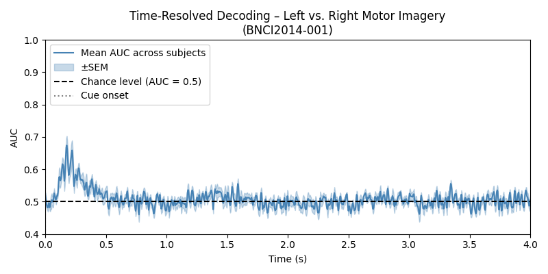

Note
Go to the end to download the full example code.
Time-Resolved Decoding with SlidingEstimator#
This example shows how to perform time-resolved decoding of EEG signals using
mne.decoding.SlidingEstimator. Instead of reducing the entire trial to
a single score, a SlidingEstimator fits an independent classifier at each time
point, revealing when during a trial the neural signal carries information
about the mental state.
This approach is a natural alternative to pseudo-online evaluation (using overlapping windows): rather than simulating an online scenario by slicing the raw signal with a sliding window, we directly assess decoding accuracy at each sample of the already-epoched trial.
We use the BNCI2014-001 motor-imagery dataset (left- vs right-hand) and apply
a logistic-regression classifier wrapped in a SlidingEstimator. For each
subject the score is evaluated via stratified 5-fold cross-validation using
mne.decoding.cross_val_multiscore(), and the results are averaged across
subjects and visualised as a time course.
# Authors: MOABB contributors
#
# License: BSD (3-clause)
# sphinx_gallery_thumbnail_number = 1
import warnings
import matplotlib.pyplot as plt
import numpy as np
from mne.decoding import SlidingEstimator, cross_val_multiscore
from sklearn.linear_model import LogisticRegression
from sklearn.pipeline import make_pipeline
from sklearn.preprocessing import StandardScaler
import moabb
from moabb.datasets import BNCI2014_001
from moabb.paradigms import LeftRightImagery
moabb.set_log_level("info")
warnings.filterwarnings("ignore")
Loading the Dataset#
We instantiate the BNCI2014-001 dataset and restrict the analysis to the first 9 subjects to keep the example reasonably fast.
Choosing a Paradigm#
The LeftRightImagery paradigm extracts
left-hand and right-hand motor-imagery epochs, applies a band-pass filter
(8–32 Hz by default), and returns the data as a 3-D NumPy array of shape
(n_trials, n_channels, n_times).
Building a Time-Resolved Pipeline#
A SlidingEstimator wraps any scikit-learn compatible
estimator and fits/scores it independently at every time point.
Here we use a simple logistic-regression classifier with Z-score
normalisation. The scoring='roc_auc' argument tells the estimator to
use AUC as the evaluation metric.
clf = make_pipeline(StandardScaler(), LogisticRegression(max_iter=1000))
sliding = SlidingEstimator(clf, scoring="roc_auc", n_jobs=1)
Evaluating Each Subject#
For each subject we:
Retrieve the preprocessed epochs via the paradigm.
Run stratified 5-fold cross-validation with
cross_val_multiscore(), which returns an array of shape(n_folds, n_times).Average over folds to obtain a single time course per subject.
All per-subject time courses are collected for later aggregation.
all_scores = []
for subject in dataset.subject_list:
X, y, meta = paradigm.get_data(dataset=dataset, subjects=[subject])
# cross_val_multiscore returns (n_folds, n_times)
scores = cross_val_multiscore(sliding, X, y, cv=5, n_jobs=1)
all_scores.append(scores.mean(axis=0)) # average over folds
# Stack into (n_subjects, n_times)
all_scores = np.array(all_scores)
0%| | 0.00/37.2M [00:00<?, ?B/s]
0%| | 8.19k/37.2M [00:00<08:54, 69.5kB/s]
0%| | 56.3k/37.2M [00:00<02:19, 266kB/s]
0%| | 104k/37.2M [00:00<01:52, 329kB/s]
1%|▎ | 249k/37.2M [00:00<00:54, 676kB/s]
1%|▌ | 528k/37.2M [00:00<00:28, 1.28MB/s]
3%|█ | 1.09M/37.2M [00:00<00:14, 2.43MB/s]
6%|██▏ | 2.22M/37.2M [00:00<00:07, 4.72MB/s]
12%|████▎ | 4.30M/37.2M [00:00<00:03, 8.77MB/s]
17%|██████▎ | 6.39M/37.2M [00:01<00:02, 11.5MB/s]
23%|████████▍ | 8.52M/37.2M [00:01<00:02, 13.4MB/s]
29%|██████████▌ | 10.6M/37.2M [00:01<00:01, 14.6MB/s]
34%|████████████▋ | 12.7M/37.2M [00:01<00:01, 15.6MB/s]
40%|██████████████▊ | 14.8M/37.2M [00:01<00:01, 16.1MB/s]
46%|████████████████▉ | 16.9M/37.2M [00:01<00:01, 16.6MB/s]
51%|██████████████████▉ | 19.0M/37.2M [00:01<00:01, 16.9MB/s]
57%|█████████████████████ | 21.2M/37.2M [00:01<00:00, 17.1MB/s]
63%|███████████████████████▏ | 23.3M/37.2M [00:02<00:00, 17.3MB/s]
69%|█████████████████████████▍ | 25.5M/37.2M [00:02<00:00, 17.8MB/s]
75%|███████████████████████████▌ | 27.7M/37.2M [00:02<00:00, 17.8MB/s]
81%|█████████████████████████████▊ | 30.0M/37.2M [00:02<00:00, 18.1MB/s]
90%|█████████████████████████████████▏ | 33.3M/37.2M [00:02<00:00, 21.1MB/s]
96%|███████████████████████████████████▋ | 35.8M/37.2M [00:02<00:00, 21.0MB/s]
0%| | 0.00/37.2M [00:00<?, ?B/s]
100%|██████████████████████████████████████| 37.2M/37.2M [00:00<00:00, 137GB/s]
0%| | 0.00/41.7M [00:00<?, ?B/s]
0%| | 8.19k/41.7M [00:00<10:03, 69.2kB/s]
0%| | 39.9k/41.7M [00:00<03:45, 185kB/s]
0%| | 113k/41.7M [00:00<01:50, 378kB/s]
0%|▏ | 168k/41.7M [00:00<01:41, 411kB/s]
1%|▎ | 360k/41.7M [00:00<00:49, 843kB/s]
2%|▋ | 753k/41.7M [00:00<00:24, 1.67MB/s]
4%|█▎ | 1.46M/41.7M [00:00<00:13, 3.07MB/s]
7%|██▌ | 2.87M/41.7M [00:00<00:06, 5.83MB/s]
13%|████▉ | 5.54M/41.7M [00:01<00:03, 11.0MB/s]
18%|██████▊ | 7.69M/41.7M [00:01<00:02, 13.1MB/s]
25%|█████████▏ | 10.3M/41.7M [00:01<00:01, 15.9MB/s]
30%|███████████ | 12.5M/41.7M [00:01<00:01, 16.5MB/s]
36%|█████████████▍ | 15.1M/41.7M [00:01<00:01, 18.1MB/s]
41%|███████████████▎ | 17.3M/41.7M [00:01<00:01, 18.1MB/s]
48%|█████████████████▌ | 19.8M/41.7M [00:01<00:01, 19.1MB/s]
53%|███████████████████▌ | 22.1M/41.7M [00:01<00:01, 19.0MB/s]
59%|█████████████████████▊ | 24.6M/41.7M [00:02<00:00, 19.5MB/s]
64%|███████████████████████▊ | 26.8M/41.7M [00:02<00:00, 19.4MB/s]
70%|██████████████████████████ | 29.4M/41.7M [00:02<00:00, 20.0MB/s]
76%|████████████████████████████ | 31.6M/41.7M [00:02<00:00, 19.5MB/s]
82%|██████████████████████████████▎ | 34.2M/41.7M [00:02<00:00, 20.1MB/s]
87%|████████████████████████████████▎ | 36.4M/41.7M [00:02<00:00, 19.7MB/s]
93%|██████████████████████████████████▌ | 38.9M/41.7M [00:02<00:00, 20.0MB/s]
99%|████████████████████████████████████▌| 41.2M/41.7M [00:02<00:00, 19.8MB/s]
0%| | 0.00/41.7M [00:00<?, ?B/s]
100%|██████████████████████████████████████| 41.7M/41.7M [00:00<00:00, 153GB/s]
0%| | 0.00/42.5M [00:00<?, ?B/s]
0%| | 16.4k/42.5M [00:00<05:05, 139kB/s]
0%| | 64.5k/42.5M [00:00<02:23, 295kB/s]
0%|▏ | 161k/42.5M [00:00<01:20, 528kB/s]
1%|▎ | 352k/42.5M [00:00<00:44, 952kB/s]
2%|▋ | 744k/42.5M [00:00<00:23, 1.79MB/s]
4%|█▎ | 1.51M/42.5M [00:00<00:12, 3.36MB/s]
7%|██▋ | 3.06M/42.5M [00:00<00:06, 6.51MB/s]
14%|█████▎ | 6.05M/42.5M [00:00<00:02, 12.4MB/s]
24%|████████▋ | 9.98M/42.5M [00:01<00:01, 18.8MB/s]
29%|██████████▉ | 12.5M/42.5M [00:01<00:01, 19.5MB/s]
36%|█████████████▎ | 15.3M/42.5M [00:01<00:01, 20.6MB/s]
46%|████████████████▉ | 19.4M/42.5M [00:01<00:00, 24.8MB/s]
55%|████████████████████▏ | 23.2M/42.5M [00:01<00:00, 27.0MB/s]
62%|██████████████████████▊ | 26.1M/42.5M [00:01<00:00, 26.2MB/s]
68%|█████████████████████████▎ | 29.0M/42.5M [00:01<00:00, 25.6MB/s]
77%|████████████████████████████▌ | 32.8M/42.5M [00:01<00:00, 27.5MB/s]
86%|███████████████████████████████▊ | 36.6M/42.5M [00:02<00:00, 28.6MB/s]
94%|██████████████████████████████████▋ | 39.7M/42.5M [00:02<00:00, 27.9MB/s]
0%| | 0.00/42.5M [00:00<?, ?B/s]
100%|██████████████████████████████████████| 42.5M/42.5M [00:00<00:00, 154GB/s]
0%| | 0.00/44.4M [00:00<?, ?B/s]
0%| | 16.4k/44.4M [00:00<05:21, 138kB/s]
0%| | 56.3k/44.4M [00:00<02:54, 254kB/s]
0%|▏ | 153k/44.4M [00:00<01:27, 506kB/s]
1%|▎ | 329k/44.4M [00:00<00:49, 887kB/s]
2%|▌ | 696k/44.4M [00:00<00:26, 1.68MB/s]
3%|█▏ | 1.42M/44.4M [00:00<00:13, 3.17MB/s]
6%|██▍ | 2.88M/44.4M [00:00<00:06, 5.99MB/s]
13%|████▊ | 5.79M/44.4M [00:00<00:03, 11.7MB/s]
20%|███████▎ | 8.82M/44.4M [00:01<00:02, 15.9MB/s]
25%|█████████ | 10.9M/44.4M [00:01<00:02, 16.5MB/s]
30%|███████████▎ | 13.5M/44.4M [00:01<00:01, 18.0MB/s]
37%|█████████████▌ | 16.3M/44.4M [00:01<00:01, 19.6MB/s]
42%|███████████████▋ | 18.8M/44.4M [00:01<00:01, 19.9MB/s]
48%|█████████████████▋ | 21.3M/44.4M [00:01<00:01, 21.2MB/s]
55%|████████████████████▎ | 24.4M/44.4M [00:01<00:00, 22.7MB/s]
62%|██████████████████████▊ | 27.4M/44.4M [00:01<00:00, 23.5MB/s]
68%|█████████████████████████▏ | 30.2M/44.4M [00:02<00:00, 23.3MB/s]
75%|███████████████████████████▌ | 33.1M/44.4M [00:02<00:00, 23.7MB/s]
81%|██████████████████████████████ | 36.1M/44.4M [00:02<00:00, 24.0MB/s]
88%|████████████████████████████████▌ | 39.1M/44.4M [00:02<00:00, 24.4MB/s]
95%|███████████████████████████████████ | 42.1M/44.4M [00:02<00:00, 24.6MB/s]
0%| | 0.00/44.4M [00:00<?, ?B/s]
100%|██████████████████████████████████████| 44.4M/44.4M [00:00<00:00, 146GB/s]
0%| | 0.00/44.6M [00:00<?, ?B/s]
0%| | 16.4k/44.6M [00:00<05:22, 138kB/s]
0%| | 64.5k/44.6M [00:00<02:31, 295kB/s]
0%|▏ | 161k/44.6M [00:00<01:24, 528kB/s]
1%|▎ | 352k/44.6M [00:00<00:46, 952kB/s]
2%|▋ | 736k/44.6M [00:00<00:24, 1.77MB/s]
3%|█▎ | 1.51M/44.6M [00:00<00:12, 3.37MB/s]
7%|██▌ | 3.06M/44.6M [00:00<00:06, 6.49MB/s]
14%|█████ | 6.15M/44.6M [00:00<00:03, 12.7MB/s]
20%|███████▍ | 9.00M/44.6M [00:01<00:02, 16.1MB/s]
25%|█████████▎ | 11.2M/44.6M [00:01<00:01, 16.9MB/s]
31%|███████████▌ | 13.9M/44.6M [00:01<00:01, 18.5MB/s]
37%|█████████████▊ | 16.7M/44.6M [00:01<00:01, 20.0MB/s]
43%|███████████████▉ | 19.2M/44.6M [00:01<00:01, 20.2MB/s]
49%|██████████████████ | 21.7M/44.6M [00:01<00:01, 20.5MB/s]
55%|████████████████████▏ | 24.4M/44.6M [00:01<00:00, 21.1MB/s]
61%|██████████████████████▍ | 27.0M/44.6M [00:01<00:00, 21.4MB/s]
66%|████████████████████████▌ | 29.6M/44.6M [00:02<00:00, 21.3MB/s]
74%|███████████████████████████▎ | 32.9M/44.6M [00:02<00:00, 23.3MB/s]
80%|█████████████████████████████▋ | 35.8M/44.6M [00:02<00:00, 23.5MB/s]
86%|███████████████████████████████▊ | 38.3M/44.6M [00:02<00:00, 24.1MB/s]
91%|█████████████████████████████████▊ | 40.7M/44.6M [00:02<00:00, 23.3MB/s]
97%|████████████████████████████████████ | 43.4M/44.6M [00:02<00:00, 23.4MB/s]
0%| | 0.00/44.6M [00:00<?, ?B/s]
100%|██████████████████████████████████████| 44.6M/44.6M [00:00<00:00, 152GB/s]
0%| | 0.00/43.4M [00:00<?, ?B/s]
0%| | 16.4k/43.4M [00:00<05:14, 138kB/s]
0%| | 64.5k/43.4M [00:00<02:27, 294kB/s]
0%|▏ | 161k/43.4M [00:00<01:22, 527kB/s]
1%|▎ | 352k/43.4M [00:00<00:45, 951kB/s]
1%|▌ | 577k/43.4M [00:00<00:33, 1.28MB/s]
3%|█ | 1.19M/43.4M [00:00<00:16, 2.59MB/s]
5%|█▉ | 2.31M/43.4M [00:00<00:08, 4.80MB/s]
10%|███▊ | 4.54M/43.4M [00:00<00:04, 9.19MB/s]
15%|█████▌ | 6.52M/43.4M [00:01<00:03, 11.5MB/s]
20%|███████▍ | 8.66M/43.4M [00:01<00:02, 13.5MB/s]
25%|█████████ | 10.7M/43.4M [00:01<00:02, 14.5MB/s]
30%|██████████▉ | 12.8M/43.4M [00:01<00:01, 15.5MB/s]
34%|████████████▋ | 14.9M/43.4M [00:01<00:01, 16.1MB/s]
42%|███████████████▌ | 18.3M/43.4M [00:01<00:01, 19.7MB/s]
48%|█████████████████▋ | 20.8M/43.4M [00:01<00:01, 20.1MB/s]
53%|███████████████████▋ | 23.1M/43.4M [00:01<00:01, 19.8MB/s]
60%|██████████████████████ | 25.9M/43.4M [00:02<00:00, 20.9MB/s]
66%|████████████████████████▎ | 28.6M/43.4M [00:02<00:00, 21.3MB/s]
71%|██████████████████████████▍ | 31.0M/43.4M [00:02<00:00, 21.1MB/s]
78%|████████████████████████████▋ | 33.7M/43.4M [00:02<00:00, 21.5MB/s]
84%|███████████████████████████████ | 36.4M/43.4M [00:02<00:00, 21.9MB/s]
90%|█████████████████████████████████▏ | 39.0M/43.4M [00:02<00:00, 21.7MB/s]
96%|███████████████████████████████████▌ | 41.7M/43.4M [00:02<00:00, 20.9MB/s]
0%| | 0.00/43.4M [00:00<?, ?B/s]
100%|██████████████████████████████████████| 43.4M/43.4M [00:00<00:00, 145GB/s]
0%| | 0.00/42.8M [00:00<?, ?B/s]
0%| | 8.19k/42.8M [00:00<10:16, 69.5kB/s]
0%| | 56.3k/42.8M [00:00<02:40, 266kB/s]
0%| | 136k/42.8M [00:00<01:34, 450kB/s]
1%|▎ | 304k/42.8M [00:00<00:51, 827kB/s]
1%|▍ | 505k/42.8M [00:00<00:37, 1.13MB/s]
2%|▉ | 1.04M/42.8M [00:00<00:18, 2.27MB/s]
3%|█▎ | 1.47M/42.8M [00:00<00:15, 2.71MB/s]
7%|██▌ | 2.98M/42.8M [00:00<00:06, 5.87MB/s]
14%|█████ | 5.93M/42.8M [00:01<00:03, 11.7MB/s]
18%|██████▊ | 7.90M/42.8M [00:01<00:02, 13.2MB/s]
25%|█████████▎ | 10.8M/42.8M [00:01<00:01, 16.5MB/s]
35%|████████████▊ | 14.8M/42.8M [00:01<00:01, 21.7MB/s]
40%|██████████████▉ | 17.3M/42.8M [00:01<00:01, 21.4MB/s]
47%|█████████████████▎ | 20.1M/42.8M [00:01<00:01, 22.0MB/s]
56%|████████████████████▋ | 23.9M/42.8M [00:01<00:00, 25.1MB/s]
62%|███████████████████████ | 26.7M/42.8M [00:01<00:00, 24.6MB/s]
69%|█████████████████████████▌ | 29.5M/42.8M [00:02<00:00, 24.2MB/s]
78%|████████████████████████████▋ | 33.2M/42.8M [00:02<00:00, 26.2MB/s]
84%|███████████████████████████████▏ | 36.1M/42.8M [00:02<00:00, 25.7MB/s]
91%|█████████████████████████████████▊ | 39.1M/42.8M [00:02<00:00, 25.4MB/s]
99%|████████████████████████████████████▊| 42.6M/42.8M [00:02<00:00, 26.5MB/s]
0%| | 0.00/42.8M [00:00<?, ?B/s]
100%|██████████████████████████████████████| 42.8M/42.8M [00:00<00:00, 204GB/s]
0%| | 0.00/42.2M [00:00<?, ?B/s]
0%| | 8.19k/42.2M [00:00<10:09, 69.3kB/s]
0%| | 56.3k/42.2M [00:00<02:38, 266kB/s]
0%|▏ | 144k/42.2M [00:00<01:27, 481kB/s]
1%|▎ | 321k/42.2M [00:00<00:48, 873kB/s]
2%|▌ | 680k/42.2M [00:00<00:25, 1.64MB/s]
3%|█▏ | 1.40M/42.2M [00:00<00:13, 3.13MB/s]
7%|██▍ | 2.83M/42.2M [00:00<00:06, 6.02MB/s]
13%|████▉ | 5.70M/42.2M [00:00<00:03, 11.7MB/s]
23%|████████▎ | 9.55M/42.2M [00:01<00:01, 18.1MB/s]
29%|██████████▋ | 12.1M/42.2M [00:01<00:01, 19.2MB/s]
35%|█████████████ | 14.9M/42.2M [00:01<00:01, 20.4MB/s]
44%|████████████████▏ | 18.5M/42.2M [00:01<00:01, 23.4MB/s]
50%|██████████████████▋ | 21.3M/42.2M [00:01<00:00, 23.4MB/s]
57%|█████████████████████ | 24.1M/42.2M [00:01<00:00, 23.2MB/s]
67%|████████████████████████▋ | 28.2M/42.2M [00:01<00:00, 26.6MB/s]
75%|███████████████████████████▋ | 31.5M/42.2M [00:01<00:00, 28.4MB/s]
81%|██████████████████████████████▏ | 34.4M/42.2M [00:02<00:00, 27.0MB/s]
88%|████████████████████████████████▌ | 37.1M/42.2M [00:02<00:00, 26.6MB/s]
96%|███████████████████████████████████▋ | 40.7M/42.2M [00:02<00:00, 27.7MB/s]
0%| | 0.00/42.2M [00:00<?, ?B/s]
100%|██████████████████████████████████████| 42.2M/42.2M [00:00<00:00, 148GB/s]
0%| | 0.00/45.0M [00:00<?, ?B/s]
0%| | 16.4k/45.0M [00:00<05:26, 138kB/s]
0%| | 64.5k/45.0M [00:00<02:32, 294kB/s]
0%|▏ | 161k/45.0M [00:00<01:25, 528kB/s]
1%|▎ | 352k/45.0M [00:00<00:46, 951kB/s]
2%|▌ | 736k/45.0M [00:00<00:25, 1.77MB/s]
3%|█▏ | 1.51M/45.0M [00:00<00:12, 3.37MB/s]
7%|██▌ | 3.06M/45.0M [00:00<00:06, 6.49MB/s]
12%|████▍ | 5.42M/45.0M [00:00<00:03, 10.7MB/s]
16%|█████▉ | 7.30M/45.0M [00:01<00:03, 12.3MB/s]
21%|███████▊ | 9.56M/45.0M [00:01<00:02, 14.3MB/s]
26%|█████████▍ | 11.5M/45.0M [00:01<00:02, 15.0MB/s]
30%|███████████▎ | 13.7M/45.0M [00:01<00:01, 16.0MB/s]
35%|████████████▊ | 15.7M/45.0M [00:01<00:01, 16.1MB/s]
40%|██████████████▋ | 17.8M/45.0M [00:01<00:01, 16.7MB/s]
44%|████████████████▎ | 19.8M/45.0M [00:01<00:01, 16.6MB/s]
49%|██████████████████ | 21.9M/45.0M [00:01<00:01, 17.0MB/s]
53%|███████████████████▋ | 23.9M/45.0M [00:02<00:01, 16.9MB/s]
58%|█████████████████████▎ | 26.0M/45.0M [00:02<00:01, 17.0MB/s]
62%|███████████████████████ | 28.0M/45.0M [00:02<00:00, 17.0MB/s]
70%|█████████████████████████▊ | 31.4M/45.0M [00:02<00:00, 20.3MB/s]
75%|███████████████████████████▊ | 33.9M/45.0M [00:02<00:00, 20.4MB/s]
80%|█████████████████████████████▋ | 36.1M/45.0M [00:02<00:00, 19.8MB/s]
86%|███████████████████████████████▉ | 38.9M/45.0M [00:02<00:00, 20.9MB/s]
94%|██████████████████████████████████▋ | 42.2M/45.0M [00:02<00:00, 23.1MB/s]
99%|████████████████████████████████████▋| 44.7M/45.0M [00:02<00:00, 23.4MB/s]
0%| | 0.00/45.0M [00:00<?, ?B/s]
100%|██████████████████████████████████████| 45.0M/45.0M [00:00<00:00, 252GB/s]
0%| | 0.00/46.3M [00:00<?, ?B/s]
0%| | 8.19k/46.3M [00:00<11:07, 69.4kB/s]
0%| | 56.3k/46.3M [00:00<02:53, 266kB/s]
0%| | 104k/46.3M [00:00<02:20, 328kB/s]
1%|▏ | 232k/46.3M [00:00<01:14, 621kB/s]
1%|▍ | 505k/46.3M [00:00<00:37, 1.22MB/s]
2%|▊ | 1.05M/46.3M [00:00<00:19, 2.35MB/s]
5%|█▋ | 2.13M/46.3M [00:00<00:09, 4.53MB/s]
9%|███▍ | 4.29M/46.3M [00:00<00:04, 8.83MB/s]
14%|█████ | 6.26M/46.3M [00:01<00:03, 11.2MB/s]
18%|██████▋ | 8.38M/46.3M [00:01<00:02, 13.2MB/s]
23%|████████▎ | 10.4M/46.3M [00:01<00:02, 14.4MB/s]
27%|█████████▉ | 12.5M/46.3M [00:01<00:02, 15.3MB/s]
31%|███████████▌ | 14.5M/46.3M [00:01<00:02, 15.8MB/s]
36%|█████████████▎ | 16.6M/46.3M [00:01<00:01, 16.3MB/s]
40%|██████████████▉ | 18.7M/46.3M [00:01<00:01, 16.6MB/s]
45%|████████████████▌ | 20.8M/46.3M [00:01<00:01, 16.8MB/s]
49%|██████████████████▎ | 22.9M/46.3M [00:02<00:01, 17.1MB/s]
54%|███████████████████▉ | 25.0M/46.3M [00:02<00:01, 17.2MB/s]
59%|█████████████████████▊ | 27.2M/46.3M [00:02<00:01, 17.7MB/s]
63%|███████████████████████▍ | 29.4M/46.3M [00:02<00:00, 17.7MB/s]
68%|█████████████████████████▏ | 31.6M/46.3M [00:02<00:00, 17.9MB/s]
73%|██████████████████████████▉ | 33.7M/46.3M [00:02<00:00, 18.0MB/s]
78%|████████████████████████████▋ | 35.9M/46.3M [00:02<00:00, 18.1MB/s]
82%|██████████████████████████████▍ | 38.1M/46.3M [00:02<00:00, 18.1MB/s]
87%|████████████████████████████████▏ | 40.3M/46.3M [00:02<00:00, 18.2MB/s]
92%|█████████████████████████████████▉ | 42.5M/46.3M [00:03<00:00, 18.2MB/s]
96%|███████████████████████████████████▋ | 44.7M/46.3M [00:03<00:00, 18.2MB/s]
0%| | 0.00/46.3M [00:00<?, ?B/s]
100%|██████████████████████████████████████| 46.3M/46.3M [00:00<00:00, 230GB/s]
0%| | 0.00/44.8M [00:00<?, ?B/s]
0%| | 8.19k/44.8M [00:00<10:46, 69.3kB/s]
0%| | 56.3k/44.8M [00:00<02:48, 266kB/s]
0%| | 136k/44.8M [00:00<01:39, 450kB/s]
0%|▏ | 209k/44.8M [00:00<01:27, 512kB/s]
1%|▎ | 417k/44.8M [00:00<00:46, 954kB/s]
2%|▋ | 849k/44.8M [00:00<00:23, 1.86MB/s]
4%|█▍ | 1.73M/44.8M [00:00<00:11, 3.65MB/s]
8%|██▉ | 3.49M/44.8M [00:00<00:05, 7.17MB/s]
15%|█████▌ | 6.67M/44.8M [00:01<00:02, 13.2MB/s]
21%|███████▊ | 9.40M/44.8M [00:01<00:02, 16.2MB/s]
26%|█████████▋ | 11.7M/44.8M [00:01<00:01, 17.1MB/s]
32%|███████████▉ | 14.4M/44.8M [00:01<00:01, 18.8MB/s]
38%|██████████████▏ | 17.2M/44.8M [00:01<00:01, 20.1MB/s]
44%|████████████████▎ | 19.7M/44.8M [00:01<00:01, 20.3MB/s]
50%|██████████████████▍ | 22.3M/44.8M [00:01<00:01, 20.8MB/s]
57%|█████████████████████▏ | 25.6M/44.8M [00:01<00:00, 23.0MB/s]
64%|███████████████████████▌ | 28.6M/44.8M [00:02<00:00, 23.4MB/s]
70%|█████████████████████████▊ | 31.2M/44.8M [00:02<00:00, 23.1MB/s]
76%|████████████████████████████ | 33.9M/44.8M [00:02<00:00, 22.9MB/s]
82%|██████████████████████████████▍ | 36.8M/44.8M [00:02<00:00, 23.3MB/s]
89%|████████████████████████████████▊ | 39.8M/44.8M [00:02<00:00, 23.7MB/s]
95%|███████████████████████████████████▏ | 42.7M/44.8M [00:02<00:00, 23.8MB/s]
0%| | 0.00/44.8M [00:00<?, ?B/s]
100%|██████████████████████████████████████| 44.8M/44.8M [00:00<00:00, 159GB/s]
0%| | 0.00/44.8M [00:00<?, ?B/s]
0%| | 8.19k/44.8M [00:00<10:46, 69.3kB/s]
0%| | 56.3k/44.8M [00:00<02:48, 266kB/s]
0%| | 128k/44.8M [00:00<01:46, 418kB/s]
1%|▎ | 296k/44.8M [00:00<00:55, 807kB/s]
1%|▌ | 593k/44.8M [00:00<00:31, 1.41MB/s]
3%|█ | 1.22M/44.8M [00:00<00:16, 2.70MB/s]
5%|█▉ | 2.39M/44.8M [00:00<00:08, 5.03MB/s]
10%|███▊ | 4.66M/44.8M [00:00<00:04, 9.45MB/s]
16%|█████▊ | 7.01M/44.8M [00:01<00:02, 12.6MB/s]
21%|███████▋ | 9.32M/44.8M [00:01<00:02, 14.7MB/s]
26%|█████████▋ | 11.7M/44.8M [00:01<00:02, 16.2MB/s]
31%|███████████▌ | 14.0M/44.8M [00:01<00:01, 17.2MB/s]
36%|█████████████▍ | 16.3M/44.8M [00:01<00:01, 17.9MB/s]
42%|███████████████▍ | 18.6M/44.8M [00:01<00:01, 18.3MB/s]
47%|█████████████████▎ | 21.0M/44.8M [00:01<00:01, 18.7MB/s]
52%|███████████████████▎ | 23.3M/44.8M [00:01<00:01, 18.9MB/s]
57%|█████████████████████▏ | 25.7M/44.8M [00:02<00:00, 19.1MB/s]
63%|███████████████████████▏ | 28.0M/44.8M [00:02<00:00, 19.3MB/s]
68%|█████████████████████████ | 30.4M/44.8M [00:02<00:00, 19.4MB/s]
73%|███████████████████████████ | 32.7M/44.8M [00:02<00:00, 19.5MB/s]
82%|██████████████████████████████▍ | 36.9M/44.8M [00:02<00:00, 24.0MB/s]
88%|████████████████████████████████▌ | 39.5M/44.8M [00:02<00:00, 23.3MB/s]
94%|██████████████████████████████████▌ | 41.9M/44.8M [00:02<00:00, 22.4MB/s]
0%| | 0.00/44.8M [00:00<?, ?B/s]
100%|██████████████████████████████████████| 44.8M/44.8M [00:00<00:00, 159GB/s]
Building the Time Vector#
The time axis of the decoded epochs starts at tmin (0 s relative to the
motor-imagery cue) and ends at the trial duration defined by the dataset
(4 s for BNCI2014-001 at 250 Hz).
sfreq = 250 # BNCI2014-001 sampling frequency
tmin = paradigm.tmin # 0.0 s
tmax = dataset.interval[1] - dataset.interval[0] # 4.0 s
times = np.linspace(tmin, tmax, all_scores.shape[1])
Plotting Time-Resolved Decoding Accuracy#
We plot the group-average AUC score together with the standard error of the mean (SEM) across subjects. A horizontal dashed line at 0.5 indicates chance level.
mean_scores = all_scores.mean(axis=0)
sem_scores = all_scores.std(axis=0) / np.sqrt(len(dataset.subject_list))
fig, ax = plt.subplots(figsize=(8, 4))
ax.plot(times, mean_scores, label="Mean AUC across subjects", color="steelblue")
ax.fill_between(
times,
mean_scores - sem_scores,
mean_scores + sem_scores,
alpha=0.3,
color="steelblue",
label="±SEM",
)
ax.axhline(0.5, linestyle="--", color="k", label="Chance level (AUC = 0.5)")
ax.axvline(0, linestyle=":", color="gray", label="Cue onset")
ax.set_xlabel("Time (s)")
ax.set_ylabel("AUC")
ax.set_title("Time-Resolved Decoding – Left vs. Right Motor Imagery\n(BNCI2014-001)")
ax.legend(loc="upper left")
ax.set_xlim(times[0], times[-1])
ax.set_ylim(0.4, 1.0)
plt.tight_layout()
plt.show()

Total running time of the script: (6 minutes 58.288 seconds)
Estimated memory usage: 670 MB
Run this example